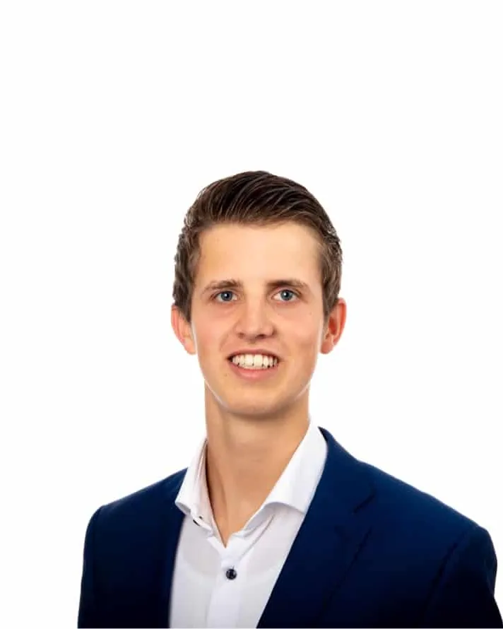
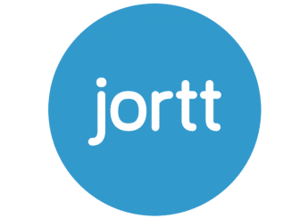

Hoi, ik ben Andries
Boekhouder en fiscaal adviseur. In 2018 begon ik Van der Werff Controlling met één doel: fiscale kennis toegankelijk en betaalbaar maken.
- Opgeleid tot fiscaal adviseur (FSDC)
- Partner van boekhoudprogramma Jortt
- Vanuit Stiens, online in heel Nederland
Ik ben denk ik de meest koppige fiscaal adviseur die er is.
Mijn verhaal
Mijn carrière begon bij een accountantskantoor. Daar kwam ik erachter dat een ervaren fiscalist € 210 per uur kostte. Dat is niet te betalen voor een beginnende ondernemer, dacht ik.
Dus bestudeerde ik wat fiscalisten precies doen, en waar het slimmer en goedkoper kon. Zo ontstond Van der Werff Controlling: meer waarde voor een fractie van de prijs, met moderne techniek en automatisering.
Ik deed de opleiding tot fiscaal adviseur bij het FSDC. Dat is dezelfde opleiding als die van een belastinginspecteur, maar dan voor alle zeven belastingrechten. Daardoor weet ik hoe een inspecteur denkt en waar hij op let.
Mijn kennis deel ik ook gratis, via mijn kennisbank en mijn YouTube-kanaal. Want hoe beter je je cijfers begrijpt, hoe betere keuzes je maakt.

Wat je van mij mag verwachten
Zo werken klanten met Andries
Snel bereikbaar
“Hij geeft goed advies en reageert bovendien bijzonder snel op vragen.” Jeroen de Man
Duidelijke uitleg
“Andries geeft goed advies en legt zaken duidelijk uit wanneer je iets niet begrijpt.” Linda Suk
Meedenken, ook kritisch
“Deskundig advies, een meedenkende aanpak en ruimte voor discussie.” Hendrik-Harm Kingma
Partner van Jortt
Je boekhouding in Jortt, je cijfers altijd bij de hand
Andries werkt met boekhoudprogramma Jortt. Je bank is gekoppeld, je ziet je cijfers in een realtime dashboard en hij kijkt met je mee.

Partner van JorttBankkoppeling en realtime dashboard
Gratis consult
Benieuwd wat je kunt besparen?
- 20 minuten, gratis en vrijblijvend
- Videogesprek of telefonisch
- Andries bevestigt per e-mail
Liever bellen? 06 11 89 92 88